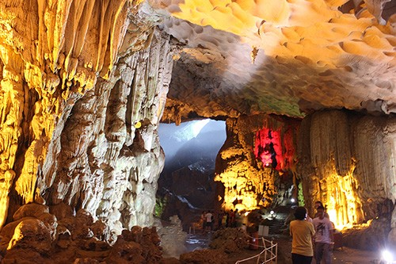
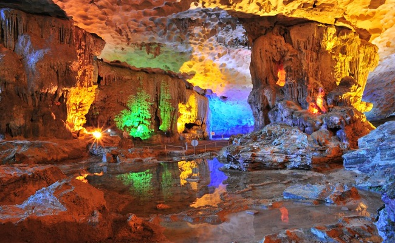
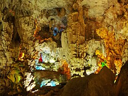
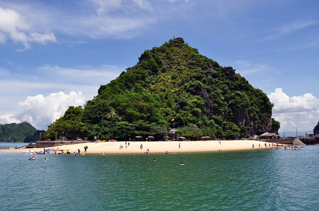
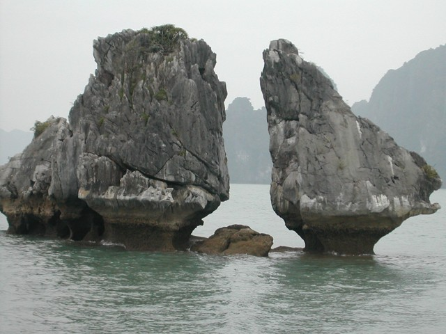
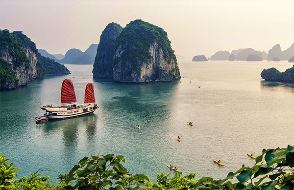
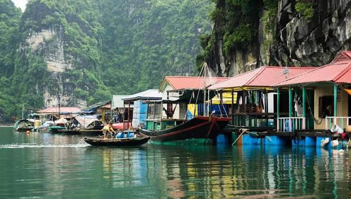
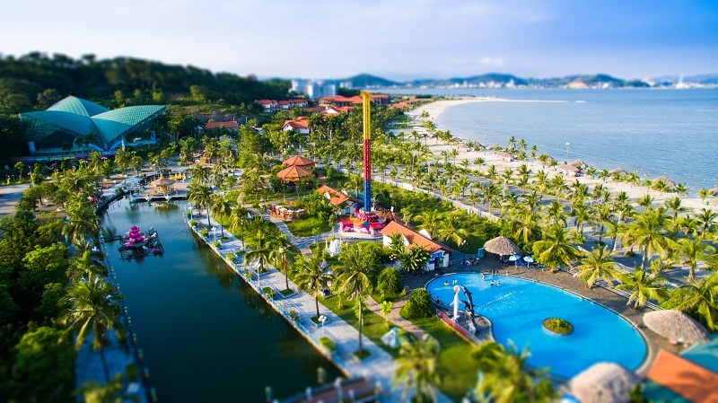
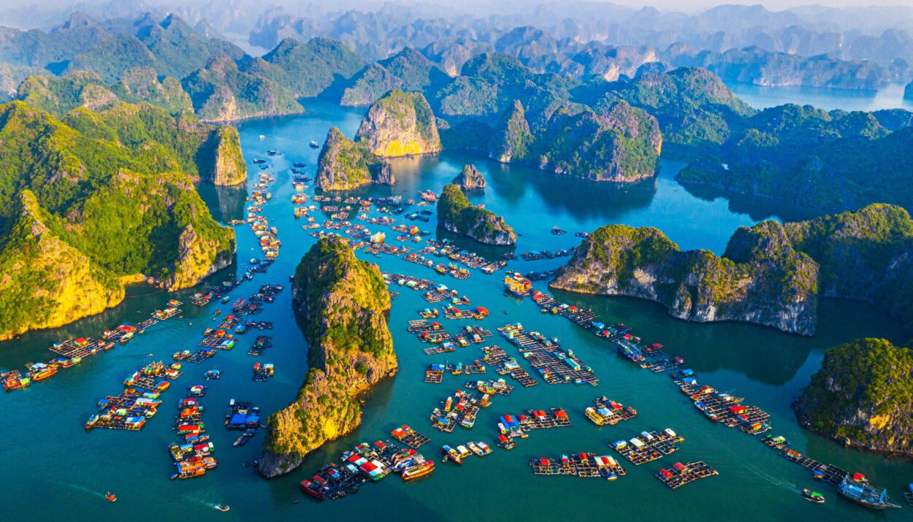

Khám phá những danh thắng tuyệt đẹp trên Vịnh Hạ Long

Hang Sửng Sốt, hay động Sửng Sốt nằm trên đảo Bồ Hòn ở trung tâm vịnh Hạ Long, được người Pháp đặt tên "Grotte des surprises" (động của những kỳ quan). Đây là một hang động rộng và đẹp vào bậc nhất của vịnh Hạ Long. Nằm ở vùng trung tâm du lịch của vịnh với hệ thống trong tuyến du lịch bao gồm bãi tắm Ti Tốp - hang Bồ Nâu - động Mê Cung - hang Luồn - hang Sửng Sốt. Hang có diện tích khoảng 10.000 m², chiều dài hơn 200 m, chỗ rộng nhất 80 m, được chia thành 2 ngăn chính.

Động Thiên Cung là một hang động đẹp nằm trên đảo Đầu Gỗ, cách cảng tàu du lịch khoảng 4km. Động có cấu trúc đa dạng với hệ thống thạch nhũ rực rỡ, không gian tráng lệ như cung điện giữa lòng núi. Trần hang cao từ 10-25m, với những khối nhũ đá màu sắc lấp lánh tạo nên vẻ đẹp huyền ảo, kỳ ảo.

Hang Đầu Gỗ nằm trên đảo Đầu Gỗ, là một trong những hang động đẹp nhất vịnh Hạ Long. Hang có diện tích khoảng 5.000m² với 3 ngăn lớn. Ngăn ngoài có nhiều nhũ đá rủ xuống như rèm cửa, ngăn giữa có giếng nước trong veo, ngăn trong có không gian rộng lớn với những khối thạch nhũ muôn hình vạn trạng.

Đảo Ti Tốp có bãi tắm hình vòng cung tuyệt đẹp, cát trắng mịn, nước biển trong xanh. Du khách có thể leo lên đỉnh núi cao khoảng 100m để ngắm toàn cảnh vịnh Hạ Long từ trên cao. Đảo được đặt tên theo nhà du hành vũ trụ Liên Xô Gherman Titov, người đã cùng Chủ tịch Hồ Chí Minh thăm đảo năm 1962.

Hòn Trống Mái là biểu tượng của vịnh Hạ Long, gồm hai hòn đá lớn nhỏ đứng cạnh nhau, một hòn cao lớn như chú gà trống, một hòn nhỏ hơn như cô gà mái. Hòn đá độc đáo này mang ý nghĩa về tình yêu chung thủy và đã trở thành biểu tượng du lịch của Việt Nam.

Vịnh Bái Tử Long nằm ở phía Đông Bắc vịnh Hạ Long, mang vẻ đẹp hoang sơ, ít du khách hơn, thích hợp cho những ai yêu thích sự tĩnh lặng và muốn khám phá thiên nhiên nguyên sơ. Nơi đây có nhiều bãi biển đẹp, hang động kỳ thú và những làng chài yên bình.

Làng chài Cửa Vạn là một trong những làng chài lâu đời nhất trên vịnh Hạ Long. Du khách đến đây có thể trải nghiệm văn hóa của ngư dân, chèo thuyền nan khám phá vịnh, tham quan lớp học nổi và tìm hiểu đời sống thú vị của cư dân trên vịnh.

Đảo Tuần Châu là một đảo nhân tạo nổi tiếng với khu du lịch nghỉ dưỡng cao cấp. Nơi đây có bãi tắm đẹp, công viên nước, sân khấu biểu diễn cá heo, hải cẩu và chương trình múa rối nước. Du khách có thể đi cáp treo hoặc tàu cao tốc từ đất liền ra đảo.

Đảo Cát Bà là hòn đảo lớn nhất trong quần đảo Cát Bà, thuộc thành phố Hải Phòng, nằm ở phía Tây Nam vịnh Hạ Long. Nơi đây có vườn quốc gia Cát Bà với hệ sinh thái đa dạng, các bãi biển đẹp như Cát Cò, và hang động kỳ thú như Trung Trang, Quân Y.